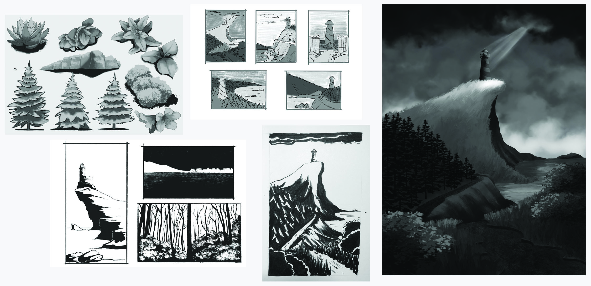
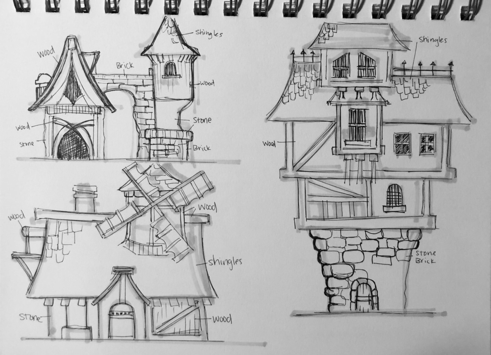
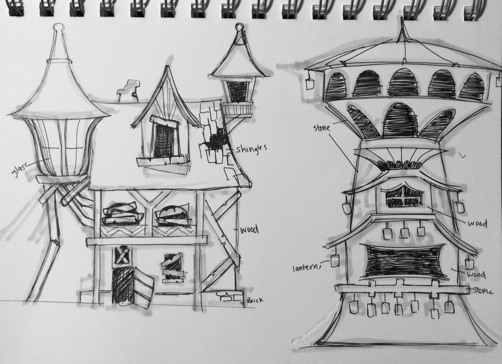
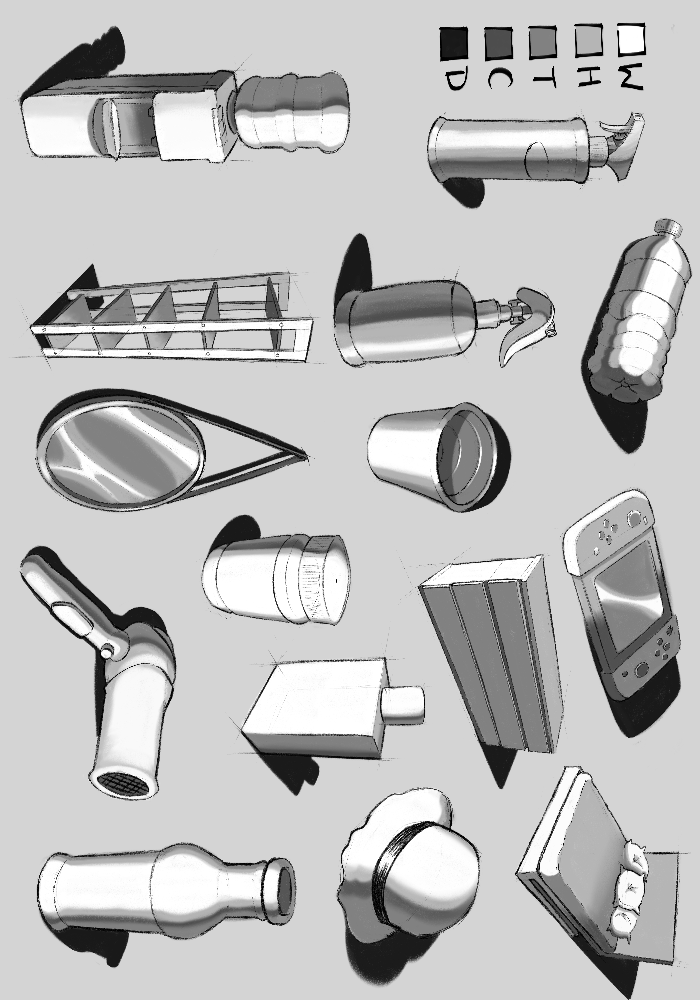
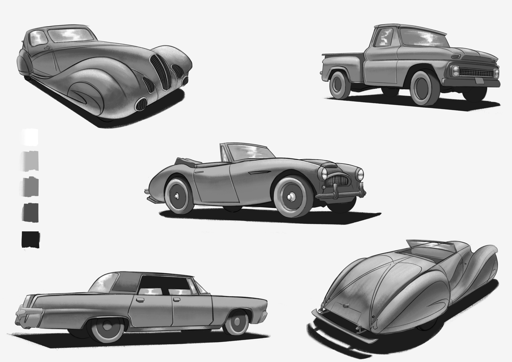
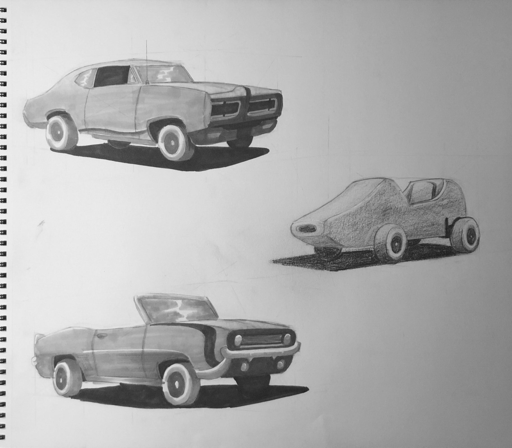
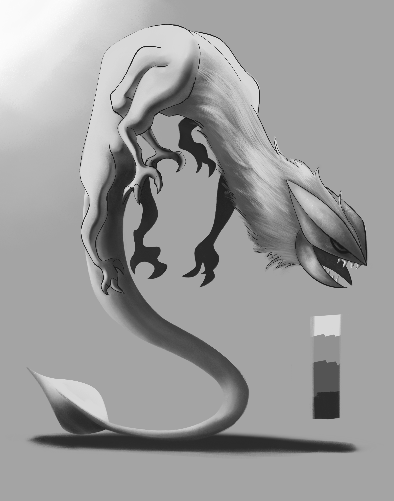

a bit more about me
i'm based in houston, texas and have been studying online for a while now. drawing has been the constant throughout all of it, i've been sketching away since i was a kid and i haven't really stopped! everything else (the modding, the programming, the general obsessive curiosity) kind of orbits around that :D
finishing things is an ongoing challenge for me... my work in progress folder is embarrassingly full, but i'm getting better at calling something done instead of endlessly tweaking it
my artwork






